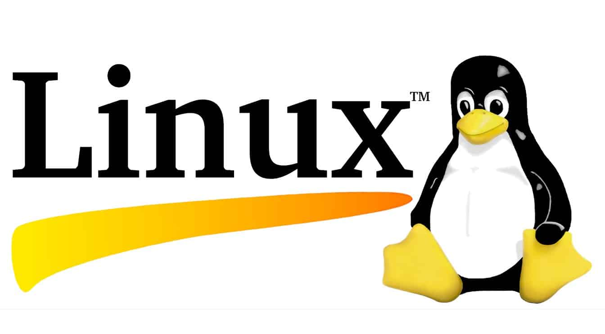

Um pouco da historia do Linux
A História do Linux começou em 1991 com o início de um projeto pessoal de um estudante finlandês chamado Linus Torvalds de criar um novo núcleo de sistema operacional. Desde então, o núcleo Linux resultante foi marcado por um crescimento constante através de sua história. A partir do lançamento inicial de seu código-fonte em 1991, cresceu de um pequeno grupo de arquivo em C sob uma proibitiva licença de distribuição comercial, em 2009, possuir mais de 370 megabytes de fonte sob a licença GPL.

Eventos que levaram à criação
O sistema operativo Unix foi concebido e implementado por Ken Thompson e Dennis Ritchie (ambos dos AT&T Bell Laboratories) em 1969 e primeiramente lançado em 1970. Sua disponibilidade e portabilidade fizeram com que fosse amplamente adotado, copiado e modificado por instituições acadêmicas e negócios. Seu design influenciou autores de outros sistemas.[carece de fontes] Em 1983, Richard Stallman começou o Projeto GNU com o objetivo de criar um Sistema operacional tipo Unix gratuito e livre.[2] Como parte desse trabalho, ele escreveu a GNU General Public License (GPL). No começo dos anos 1990, havia software quase suficiente para se criar um sistema operacional completo. Entretanto, o núcleo GNU, chamado de Hurd, não conseguiu atrair atenção suficiente dos desenvolvedores, deixando o GNU incompleto. Outro projeto de sistema operacional livre, inicialmente lançado em 1977, foi o Berkeley Software Distribution (BSD). Foi desenvolvido pela Universidade da Califórnia em Berkeley a partir da versão 6 do Unix da AT&T. Uma vez que o BSD continha código do Unix do qual a AT&T era proprietária, a AT&T entrou com um processo (USL v. BSDi) no começo dos anos 1990 contra a Universidade da Califórnia. Isso limitou fortemente o desenvolvimento e adoção do BSD.[3][4] Em 1985, a Intel lançou o 80386, o primeiro microprocessador x86 com conjunto de instruções de 32-bit e MMU com paginação.[5] Em 1986, Maurice J. Bach, of AT&T Bell Labs, publicou The Design of the UNIX Operating System.[6] Essa descrição definitiva cobria principalmente o núcleo System V versão 2, com algumas novas características da versão 3 e do BSD. O MINIX, um sistema operacional tipo Unix pensada para uso acadêmico, foi lançado por Andrew S. Tanenbaum em 1987. Se bem o código-fonte do sistema estava disponível, modificações e redistribuições não era permitidas. Ademais, o design do MINIX de 16-bit não se adaptou muito bem às características da cada vez mais barata e popular arquitetura de 32-bit do Intel 386 para computadores pessoais. Esses fatores e a falta de uma adoção ampla de um kernel livre deram o impulso para que Torvalds iniciasse seu projeto. Ele declarou que se o núcleo GNU ou o núcleo 386BSD estivessem disponíveis naquela época, ele possivelmente não teria escrito o seu próprio.
A criação do Linux
Em 1991, em Helsinki, Linus Torvalds começou o projeto que mais tarde se tornaria o núcleo Linux. Era inicialmente um emulador de terminal, o qual Torvalds usava para acessar os grandes servidores UNIX da universidade. Ele escreveu um programa especificamente para o hardware que estava usando e independente de um sistema operacional porque queria usar as funções de seu novo computador com um processador 80386. O desenvolvimento foi feito no MINIX usando o GNU C compiler, o qual é ainda hoje a escolha principal para compilar o Linux (embora o código possa ser construído com outros compiladores, como o Intel C Compiler). Como Torvalds escreveu em seu livro Just for Fun,[9] ele eventualmente percebeu que havia escrito o núcleo de um sistema operacional. No dia 25 de agosto de 1991, ele anunciou esse sistema em um post no newsgroup "comp.os.minix." da Usenet: Olá a todos que estão usando minix - Eu estou fazendo um sistema operacional livre (é apenas um hobby, não será grande e profissional como o gnu) para os clones AT 386(486). Está sendo desenvolvido desde abril e está quase pronto. Gostaria de receber qualquer feedback sobre o que as pessoas gostam/não gostam no minix, uma vez que o meu SO se parece um pouco com ele (mesmo layout físico de sistema de arquivos (devido a razões práticas) entre outras coisas. No momento eu o portei para bash(1.08) e gcc(1.40), e as coisas parecem funcionar. Isso implica que irei conseguir algo prático dentro de poucos meses e gostaria de saber quais características a maioria das pessoas gostaria que tivesse. Quaisquer sugestões são bem-vindas, mas não prometo que eu vá implementá-las :-) Linus (torvalds@kruuna.helsinki.fi) PS. Sim — ele não tem nenhum código minix, e possui um fs multitarefa. Ele NÃO é portável (usa troca de contexto 386, etc), e provavelmente nunca será compatível com nada além de discos rígidos AT, uma vez que isso é tudo o que eu tenho :-(. —Linus Torvalds
O nome
Linus Torvalds queria chamar seu invento de Freax, um portmanteau de "freak", "free", and "x" (como uma alusão ao Unix). Durante o começo de seu trabalho no sistema, ele guardou os arquivos sob o nome de "Freax" por cerca de um ano. Torvalds já havia considerado o nome "Linux," mas inicialmente o descartou por ser demasiadamente egocêntrico.[9] Com o intuito de facilitar o desenvolvimento, foi feito o upload dos arquivos para o FTP server (ftp.funet.fi) da FUNET em setembro de 1991. Ari Lemmke, que trabalhava junto com Torvalds na Universidade de Helsinki e era um dos administradores voluntários do servidor FTP naquela época, não achava que "Freax" fosse um bom nome. Então, deu ao projeto o nome de "Linux" no servidor sem consultar Torvalds.[9] Mais tarde, contudo, Torvalds consentiu o nome "Linux". Para demonstrar como a palavra "Linux" deveria ser pronunciada, Torvalds incluiu um guia de áudio (Loudspeaker.svg? reproduzir) com o código-fonte do núcleo.
Linux sob a licença GNU GPL
Torvalds primeiramente publicou o núcleo Linux sob sua própria licença, que tinha restrições no que diz respeito à atividade comercial. O software a ser usado junto com o núcleo era o desenvolvido como parte do Projeto GNU, licenciado sob os termos da GNU General Public License, uma licença de software livre. O primeiro lançamento do núcleo Linux, o Linux 0.01, incluía um binário do Bash shell do GNU.[13] Nas "Notas para o lançamento do linux 0.01", Torvalds listou que o software GNU era necessário para o funcionamento do Linux:[13] Infelizmente, um núcleo por si só não leva a lugar nenhum. Para conseguir um sistema que funcione, são necessários um shell, compiladores, uma biblioteca etc. Essas são partes separadas e podem estar sob um copyright mais restrito (ou mesmo menos restrito). A maioria das ferramentas usadas com o linux são software GNU e estão sob o copyleft GNU. Tais ferramentas não estão na distribuição - pergunte-me (ou ao GNU) para mais informações.[13] Em 1992, ele sugeriu o lançamento do núcleo sob a GNU General Public License. Ele anunciou sua decisão primeiramente nas notas de lançamento da versão 0.12.[14] Em meados de dezembro de 1992, ele publicou a versão 0.99 usando a GNU GPL.[15] Desenvolvedores do Linux e do GNU trabalharam para integrar os componentes do GNU com o Linux para fazer um sistema operacional totalmente funcional e totalmente livre.[16] Torvalds declarou que “tornar o Linux compatível com a GPL foi definitivamente a melhor coisa que eu já fiz.”
Mascote oficial
Torvalds anunciou em 1996 que haveria um mascote para o Linux, um pinguim. Isso deve-se ao fato de que quando se estava por escolher um mascote, Torvalds mencionou que ele havia sido bicado por um pequeno pinguim em uma visita ao Zoológico & Aquário Nacional de Camberra, Austrália. Larry Ewing foi o responsável pelo esboço original do hoje bem conhecido mascote, baseado em sua descrição. O nome "Tux" foi sugerido por James Hughes como um derivativo de Torvalds' UniX.